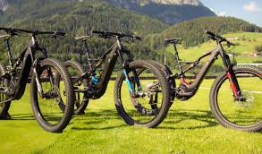

The Mountain Spoke is currently offering two half day rides
The Family Adventure Ride

Starting from the Boseman Agriculture Center, this 13.1 mile route is a single track with quick short climbs and drops. The route is fun, but riders are reminded that these nature trails are on natural surfaces surrounded by trees, water, wild animals, pointy objects, and poison ivy. Off roading requires caution and skill from the rider. The trail will be open all day and will be swept for survivors Friday at 6p.m and Sunday at 1p.m. Visit here for more information.